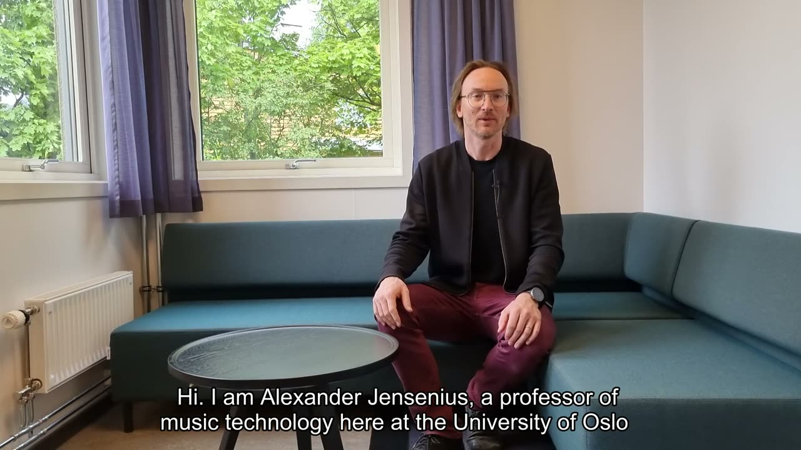
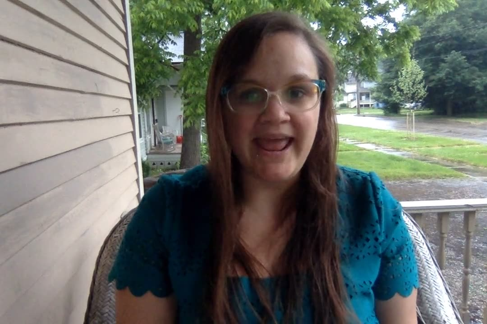

Workshop on NIME Archiving
Welcome to this workshop during the International Conference on New Interfaces for Musical Expression (NIME 2022) organized by The University of Auckland, New Zealand, 28 June - 1 July 2022.
Introduction
This workshop will continue discussions in the community about how to best preserve information from the NIME conferences, the NIME community, and the computer music community at large. The workshop will follow up on threads from the NIME publication ecosystem workshop (NIME 2020, Birmingham) and the NIMEhub workshop (NIME 2016, Brisbane).
The main task is to find a solution for an open, future-oriented, and institutionally recognized archiving solution for the activities of the NIME community. Currently, only NIME publications are archived according to the FAIR principles. No solutions exist for archiving information about instruments/interfaces and other hardware/software-based artifacts produced in the community. Neither do we have a system for describing and preserving compositions/pieces, installations, performances, and workshops.

▶Alexander Refsum Jensenius introduces the workshop. (Watch on YouTube with subtitles).
COMPEL
The starting point of the workshop discussion will be the ongoing development of COMPEL. The primary motivation of COMPEL is to develop a framework that offers storage, retrieval, sorting, dynamic social-media-like curation, and appeal while also supporting critical preservational aspects, such as DOIs, and reproducibility of electroacoustic compositions. There are numerous technical and archival challenges when developing such a solution.
Ico Bukvic introduces COMPEL.
Workshop topics
This workshop will focus on a subset of the said challenges dealing with the conceptual difficulties of describing NIME artifacts: interfaces/instruments, pieces, and performances.

▶Hollis Wittman introduces herself and speaks briefly about metadata; a video transcript is available here.
The NIME community is of particular interest as the community’s output demands the most broadly defined form of preservation, including interactive scores, schematics, code, specifications, and various data/media files. As a result, the workshop will seek to tackle questions like:
How can we develop a consistent set of metadata to describe the community's activities?
Can we agree on a core vocabulary to describe the main types of NIME artifacts?
How can we balance the need for a finite and well-defined vocabulary of an archiving system combined with the need for open-ended descriptors in a rapidly changing creative community?
How can we ensure that metadata generated for collection and preservation contribute to ongoing decolonization processes within the NIME community?
Workshop format
The workshop has a combination of asynchronous and synchronous activities:
Some material for viewing/reading before the workshop (this page)
A survey to fill out
Two 1-hour conversations scheduled at different times during the conference's workshop day
Pre- and post-workshop discussions in the NIME online forum
Organizers
Alexander Refsum Jensenius is a professor of music technology at the University of Oslo. He is chair of the NIME steering committee and eager to find solutions for archiving activities of the NIME community.
Ivica Ico Bukvic is a professor at Virginia Tech working on community building through creative enabling technologies and experiences. He has served on the NIME Steering Committee since 2017 and is the original co-author of the COMPEL initiative.
Hollis Wittman is an archivist and musician living in Kalamazoo, Michigan. She works with Virginia Tech on the COMPEL project. Her research centers around digital preservation strategies for born-digital music, accessibility and visibility of electronic music, and metadata development for unique records.
Andi Ogier is Assistant Dean and Director of Data Services in the University Libraries at Virginia Tech. She leads a team of librarians and researchers who solve data-related problems across the University. Andi has experience creating and maintaining data management, curation, publishing, and preservation services for a large research University.